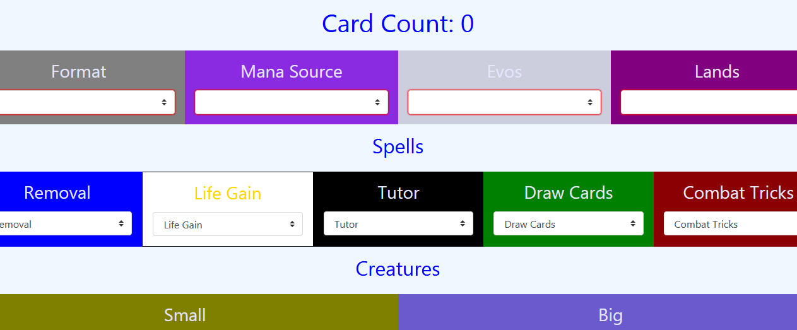
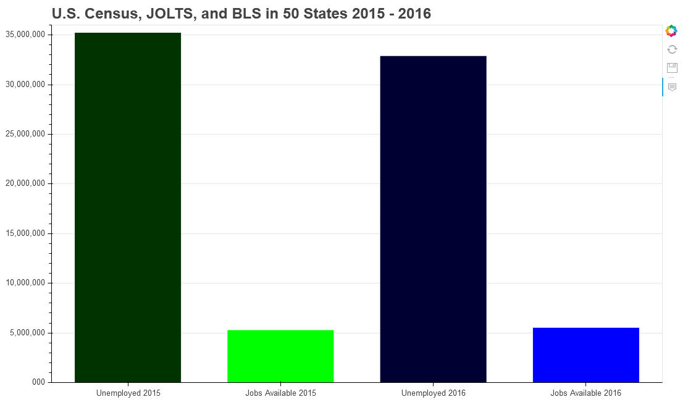
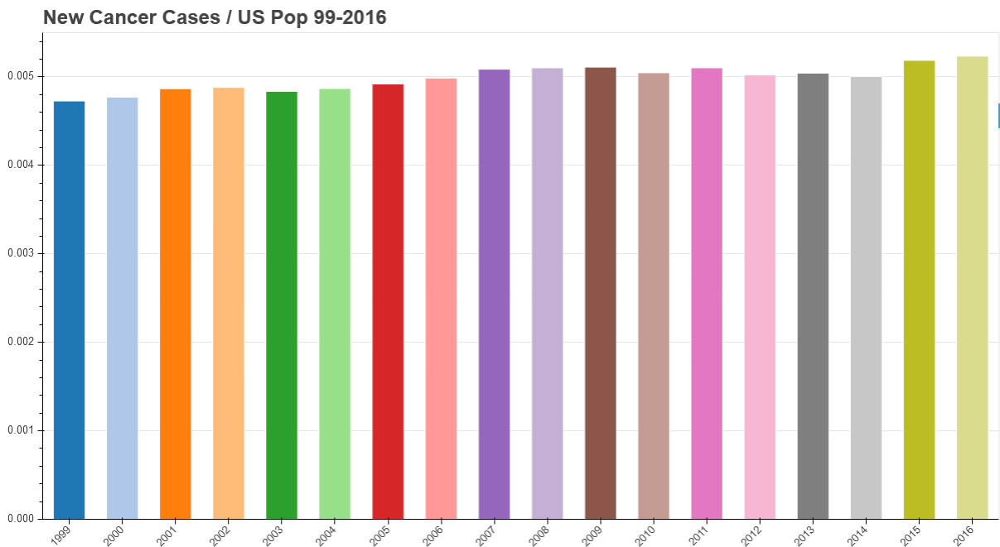
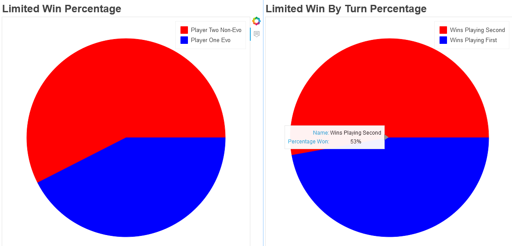

Django/Heroku App
Developed Django website equipped with a landing page, admin access, as well as two apps: Scraper and Polling. Users can actively create questions and vote on said inquiries. Bleach is used to sanitize content prior to database save. Scraper app retrieves content from website based on target class/id/tag.
Visit Site »Basic MTG Simulation APP
To simulate one of my hobbies, MTG, I developed a basic simulation of the card game. Users can create a customized deck and test out how it performs against a similar deck packed with 'competitive edge' cards. Once this personalized deck is submitted, 1,000 games are simulated, and the user is redirected to the results.
 Use MTG Simulation App »Data Visualization Projects
How Fast is Automation Reducing Job Availability? I wanted to know the answer to this question for my Code Louisville Python Project. To accomplish this goal, I gathered datasets from the U.S. Census, Bureau of Labor Statistics, and JOLTS. End results show an estimated 27 million people without a job available to them in 2016.
 See the Stats »New Cancer Instances - Data Visualization
To identify whether or not cancer prevention is working, I collected datasets from Center for Disease Control and Cancer.org. From there, I compared these sets of data to the average population rate for the United States. The information, spanning from 1999 to 2016, reveals a growing percentage of new cancer patients over the last two decades.
 Check Your State »MTG Basic Simulation - Data Visualization Stats
After completing the above Python project, I wanted to identify how often one deck wins over another in MTG. Thus far, I can customize a deck in the back-end and the algorithm copies it, replaces mana with Evolving Wilds, then faces the decks against each other 100,000 times.
 View Results »